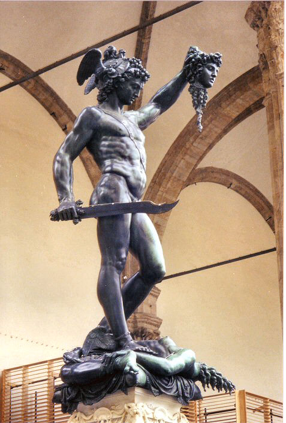
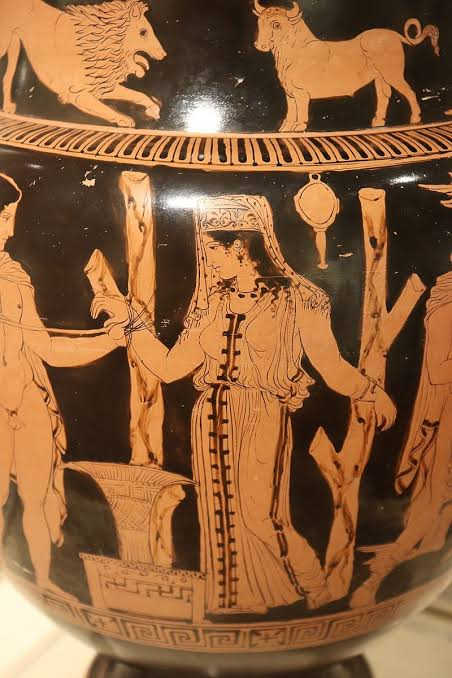

🐙 ¡LIBERAD AL KRAKEN ARITMÉTICO! 🐙 (Introducción para el alumnado)
🚨 ¡ATENCIÓN, HÉROES Y HEROÍNAS DE 4.º ESO! 🚨
Algo terrible está ocurriendo en el mundo de los dioses...
El Kraken Aritmético ha despertado. 🐙🌊
Los caminos del Olimpo están bloqueados, el Tártaro vuelve a estar abierto y los Titanes (encabezados por Cronos) se preparan para atacar. Perseo necesita vuestra ayuda, pero esta vez hay un problema: no bastará con una espada, un escudo o la fuerza de un dios.
Para derrotar al Kraken necesitaréis algo mucho más poderoso:
🧠 ¡VUESTRO ARSENAL MATEMÁTICO!
A lo largo de esta aventura os convertiréis en auténticos héroes y heroínas matemáticos. Viajaréis junto a Perseo y Andrómeda por lugares increíbles y tendréis que superar pruebas en:
- ⚡ El Olimpo, donde os enfrentaréis al poder de Zeus.
- 💀 El inframundo, donde Hades pondrá a prueba vuestra estrategia.
- 🏛️ Argos, donde tendréis que resolver nuevos desafíos.
- 🔥 El taller de Hefesto, donde prepararéis vuestras armas matemáticas.
- 🌋 El Tártaro, donde los Titanes os esperan.
- 🌊 El templo de Poseidón, donde descubriréis el poder de las raíces.
- 🐙 La batalla final, donde os enfrentaréis al temible Kraken Aritmético.
Pero cuidado... cada enemigo requiere un arma diferente.
¿Necesitas una potencia? ¿Una raíz? ¿Un porcentaje? ¿Una regla de tres? ¿Un intervalo? ¿O quizá necesitas combinar varias herramientas?
Ese será vuestro verdadero desafío:
⚔️ NO SE TRATA SOLO DE SABER HACER MATEMÁTICAS...
🧠 ¡SE TRATA DE SABER QUÉ MATEMÁTICAS NECESITAS EN CADA MOMENTO!
Durante la aventura aprenderéis a dominar:
- 🔢 Los conjuntos numéricos
- ➗ La prelación de operaciones
- ⚡ Las potencias
- 🌊 Las raíces
- ⚔️ Las reglas de tres (directa e inversa)
- 🛡️ Los porcentajes
- 🚪 Los intervalos
Y no estaréis solos. Perseo, Andrómeda, Zeus, Hades, Poseidón, Hefesto y los Titanes os acompañarán durante el viaje.
Pero al final tendréis que demostrar que estáis preparados.
🏆 VUESTRA MISIÓN FINAL
Crearéis vuestro propio:
🛡️ ARSENAL MATEMÁTICO DE LA AVENTURA DE PERSEO
Una auténtica guía de supervivencia matemática en la que tendréis que explicar qué herramientas existen, cómo funcionan y, sobre todo, cómo saber cuál utilizar cuando aparece un problema.
Y todavía hay más...
🎥 ¡Tendréis que convertiros en maestros y maestras de las matemáticas y explicar parte de vuestra aventura en un vídeo!
Porque un verdadero héroe matemático no solo sabe resolver un problema...
¡También sabe explicar cómo lo ha conseguido!
🐙 ¿ESTÁIS PREPARADOS?
El Kraken ya ha despertado.
Los Titanes avanzan.
Perseo os necesita.
Coged vuestro escudo. Preparad vuestro arsenal. Afinad vuestra estrategia.
⚔️🔥 ¡QUE COMIENCE LA AVENTURA! 🔥⚔️
¿Seréis capaces de vencer al Kraken Aritmético y a Cronos? 🐙🌊
Introducción general
«¡Liberad al Kraken Aritmético!» es una situación de aprendizaje de Matemáticas A de 4º de ESO que utiliza el universo mitológico de Furia de Titanes (2010) e Ira de Titanes (2012) como hilo conductor para acercar los contenidos de aritmética al alumnado mediante una narrativa de aventura.
La propuesta sitúa al alumnado en el papel de compañero de viaje de Perseo, que deberá superar diferentes desafíos matemáticos a lo largo de un recorrido por escenarios mitológicos. Olimpo, inframundo, Argos, el taller de Hefesto, el Tártaro y el templo de Poseidón se convierten así en contextos para plantear situaciones en las que las matemáticas dejan de aparecer como un conjunto aislado de reglas y pasan a convertirse en herramientas necesarias para avanzar en la aventura.
A lo largo de la situación se trabajan los conjuntos numéricos, la prelación de operaciones, las potencias, las raíces, las reglas de tres directa e inversa, los porcentajes y los intervalos. El objetivo no es únicamente que el alumnado conozca los procedimientos, sino que sea capaz de interpretar una situación, identificar qué herramienta matemática necesita, aplicarla correctamente y comprobar si el resultado obtenido tiene sentido.
La aventura se desarrolla mediante seis fases: motivar, activar, explorar, estructurar, aplicar y concluir-evaluar. Las primeras fases permiten recuperar conocimientos previos y detectar las necesidades del alumnado, mientras que la fase de estructuración constituye el núcleo del aprendizaje, mediante ejemplos contextualizados y problemas resueltos. Posteriormente, el alumnado deberá poner en práctica lo aprendido en nuevos retos y elaborar su propio «Arsenal Matemático de la Aventura de Perseo».
Este producto final, acompañado de una explicación en vídeo, pretende que el alumnado no se limite a recopilar fórmulas, sino que sea capaz de responder a una pregunta fundamental:
«¿Cómo sé qué herramienta matemática tengo que utilizar cuando me enfrento a un problema?»
Además del aprendizaje matemático, el contexto mitológico permite introducir una mirada crítica sobre la representación de los personajes y los roles de género en la Antigüedad. La presencia de Andrómeda como personaje activo y referente femenino permite abordar la figura de la mujer en la Antigua Grecia y favorecer una reflexión sobre los estereotipos y la igualdad entre mujeres y hombres.
Así, «¡Liberad al Kraken Aritmético!» convierte el aprendizaje de la aritmética en una aventura en la que cada concepto matemático es una nueva herramienta, cada problema una prueba y cada reto una oportunidad para demostrar que, con las estrategias adecuadas, las matemáticas también pueden convertirse en un auténtico arsenal para resolver problemas.
|
 |
 |